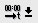
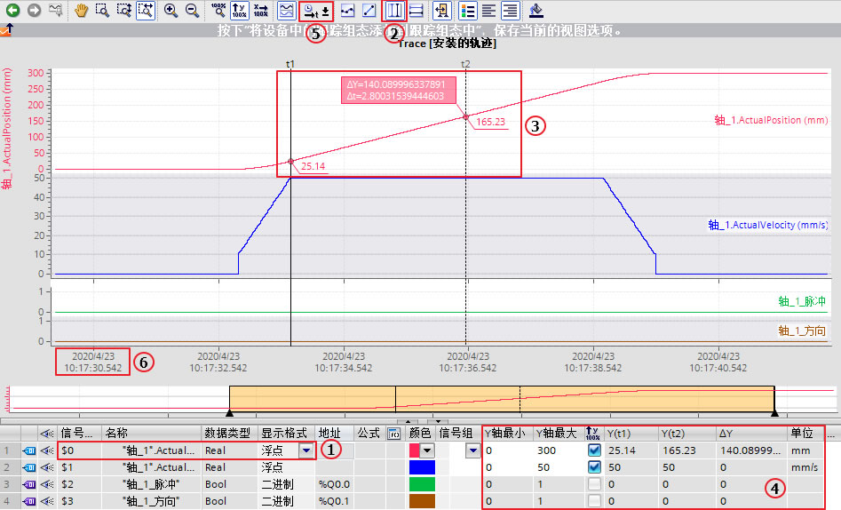
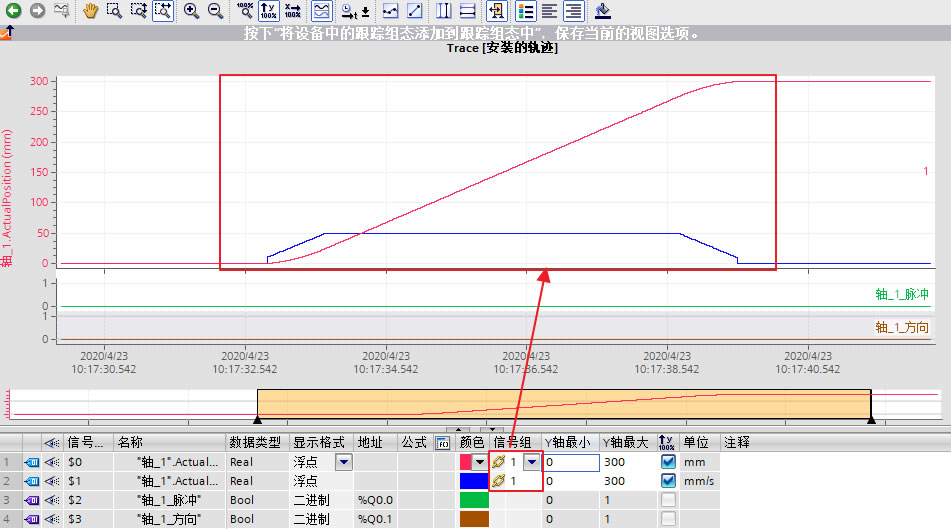
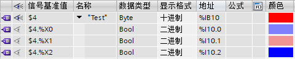
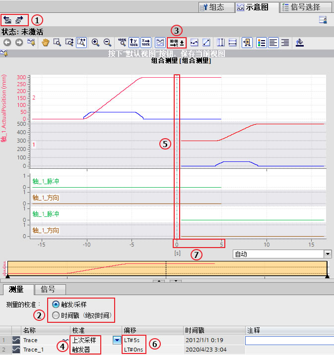

TRACE功能概述¶
在TIA博途软件中，通过轨迹功能记录测量值变化，并通过逻辑分析器对记录进行评估分析。
将配置好的TRACE下载到PLC中，从而根据条件采样变量值。多个采样值形成了以时间变化为横坐标的曲线，称为记录。可以将记录保持至离线文件中，并支持不同离线文件的对比分析。此外记录也可保存到存储卡中。
S7-1200支持装载2个TRACE配置，单个配置的最大存储空间为512KB。每个TRACE配置最多可以组态16个信号。
支持TRACE功能的硬件：
如果设备支持轨迹和逻辑分析器功能，则可使用项目树中设备下方的 "轨迹"进行选择。 以下设备支持轨迹和逻辑分析器功能：
SIMATIC S7-1200 CPU（固件版本 V4.0 及以上版本）
SIMATIC S7-1500、ET 200SP、CPU 1513pro-2 PN 和 CPU 1516pro-2 PN CPU
SIMATIC S7-1500 软件控制器
ET 200SP Open Controller
支持 Startdrive 的 SINAMICS 驱动装置
SINAMICS V90 + HSP 0185
SIRIUS SIMOCODE pro（带 Simocode ES）
SIRIUS 软起动器 3RW （带软起动器 ES）
TRACE功能的运行模式
图1. 运行模式
① TIA Portal 中编程设备 (PG) 上的轨迹组态，可在轨迹组态过程中指定待记录信号、记录时长和触发条件。
② 将轨迹组态从 PG 传输到设备，当建立在线连接时，可将整个轨迹组态传输到设备中。
③ 等待记录，如果激活所记录的轨迹组态，则记录执行与 PG 无关。满足触发器条件时，将立即进行记录。
④ 将测量结果从设备传输到 PG 中，保存项目中的测量存储 TIA Portal 里已打开项目中的测量。完成记录后可以随时保存测量，与测量时间无关。
⑤ 评估，管理和保存测量结果，通过"曲线图"和"信号表"中的各种选项，对测量结果进行评估。不同测量中的信号可叠加在一起作为组合测量，并进行比较。\
S7-1200 TRACE功能实验环境¶
在本应用实例中，通过以下产品进行TRACE功能组态。
软件：
TIA Professional V16
硬件：
CPU1217C DC/DC/DC V4.4
S7-1500 TRACE功能组态¶
1、TRACE配置介绍
1.1、新建TRACE配置
在TIA博途软件中，双击项目树相应PLC站点下的"Traces"，展开后来实现TRACE的各项功能，TRACE在线视图如图2所示。图2. 创建TRACE
①点击"添加新Trace"，用于新建Trace配置；
② 为目前离线文件和CPU已装载有相同名称的TRACE； 为目前仅存在于离线文件的TRACE； 为离线文件和CPU已装载的TRACE配置相同； 为离线文件和CPU已装载的TRACE配置不同；
③保存在离线测量文件夹下的记录文件；
④保存在在线存储卡下的记录文件；
⑤保存在离线组合测量文件夹下的记录文件；
新建TRACE配置后，右边工作区将显示TRACE组态页面。1.2、组态记录信号
一个TRACE配置最多记录16个变量，支持位、位序列、整数、浮点数、时间（Time、Date、TOD）数据类型，支持对过程映像输入、过程映像输出、位存储区以及DB块的变量进行记录。工作区配置变量如图3所示。
图3. TRACE信号配置
1.3、设置采样条件
工作区TRACE记录条件如图4所示。
图4. 配置采样
①采样OB：TRACE记录的是信号在所选采样OB结束处的值，可以选择以下OB作为采样OB：循环OB，时间OB，延时OB，循环中断OB，MC-PreServo OB，MC伺服OB，MC插补器 OB，MC-PostServo OB；
②采样频率：每隔1～2^31^-1个采样OB，记录一次所有设置信号的值；
③测量点数量：一次采样作为一个测量点，而TIA博途软件根据TRACE配置信号的数量、数据类型以及采样频率计算出测量点的最大数量；
④如使用计算出测量点的最大数量，则激活选择框；
⑤自行设置测量点数量，但不能超过测量点的最大数量。1.4、设置触发条件
触发器为TRACE采样的起始条件，工作区触发器设置如图5所示。
图5. 配置触发器
①触发模式包括立即记录、变量触发和无触发器监视（TIA V16 及以上版本支持无触发器监视模式，如选择无触发器监视和立即记录模式则没有后面的②～⑤的参数），具体区别参考表1；
表1 两种触发模式的区别
±----------------------------------±----------------------------------+ | 立即记录 | ::: {align=“left”} | | | 激活记录后，TRACE立即开始记录； | | | ::: | ±----------------------------------±----------------------------------+ | 变量触发 | ::: {align=“left”} | | | 激活记录后， | | | TRACE处于等待记录中，仅当触发变量 | | | 满足一定条件后，TRACE才开始记录； | | | ::: | ±----------------------------------±----------------------------------+ | 无触发器监视 | ::: {align=“left”} | | | 激活记录 | | | 后，TRACE立即开始记录，并不会自动 | | | 终止，只有触发停止记录才会停止。 | | | ::: | ±----------------------------------±----------------------------------+
②触发变量类型包括位、位序列、整数、浮点数、时间（Time、Date、TOD）数据类型，支持过程映像输入、过程映像输出、位存储区以及DB块的变量，该变量和待采样的信号无关；
③变量触发条件参考表2；表2 变量触发条件汇总
±----------------------±----------------------±----------------------+ | \ | 数据类型 | 说明 | | 变量触发条件 | | | ±----------------------±----------------------±----------------------+ | =TRUE | 位 | 当触发器状 | | | | 态为TRUE时，记录开始 | ±----------------------±----------------------±----------------------+ | =FALSE | 位 | 当触发器状 | | | | 态为FALSE时，记录开始 | ±----------------------±----------------------±----------------------+ | 上升沿 | 位 | 当触发器状态从FALS | | | | E变为TRUE时，记录开始 | ±----------------------±----------------------±----------------------+ | 下降沿 | 位 | 当触发器状态从TRUE | | | | 变为FALSE时，记录开始 | ±----------------------±----------------------±----------------------+ | 上升信号 | 整数和浮点数 | 当触发值到 | | | | 达或者超过为此事件配 | | | | 置的数值时，记录开始 | ±----------------------±----------------------±----------------------+ | 下降信号 | 整数和浮点数 | 当触发值到 | | | | 达或者低于为此事件配 | | | | 置的数值时，记录开始 | ±----------------------±----------------------±----------------------+ | 在范围内 | 整数和浮点数、时间 | 当触发 | | | | 值位于为此事件配置的 | | | | 数值范围内，记录开始 | ±----------------------±----------------------±----------------------+ | 不在范围内 | 整数和浮点数、时间 | 当触发 | | | | 值位于为此事件配置的 | | | | 数值范围外，记录开始 | ±----------------------±----------------------±----------------------+ | =位模式 | 整数和位序列 | 当触发 | | | | 值与为此事件配置的位 | | | | 模式匹配时，记录开始 | ±----------------------±----------------------±----------------------+ | <>位模式 | 整数和位序列 | 当触发值 | | | | 与为此事件配置的位模 | | | | 式不匹配时，记录开始 | ±----------------------±----------------------±----------------------+ | =值 | 整数和位序列、时间 | 当 | | | | 触发值等于为此事件配 | | | | 置的数值时，记录开始 | ±----------------------±----------------------±----------------------+ | <>值 | 整数和位序列、时间 | 当触 | | | | 发值不等于为此事件配 | | | | 置的数值时，记录开始 | ±----------------------±----------------------±----------------------+ | 改变值 | 所有 | 当触发值和记录激活时 | | | | 该值不同时，记录开始 | ±----------------------±----------------------±----------------------+
④预触发的测量点个数与总的测量点数量的示意图，即在总的测量点个数中包含若干满足触发条件时刻前测量点的记录；
⑤预触发的测量点个数设置，参考图6-49，记录时长（a）=1000个测量点，即预触发10个测量点，触发条件满足后记录990个测量点；1.5、设置存储卡模式
当触发器为变量触发、并且CPU的存储卡为程序卡时，可以设置将记录存储在存储卡中。每次激活记录，会在存储卡中产生一个带有时间戳的文件夹，该时间为CPU的系统时间，用于保存该次激活记录下的所有TRACE条目。工作区存储卡模式设置如图6所示，
图6. 设置设备上测量
①选中则激活存储卡模式；
②设置测量数目（1-999），该数目为每个带有时间戳文件夹内保存的最大TRACE条目数；
③根据测量数目、测量点数量以及TRACE配置信号的数量、数据类型计算出的存储空间要求，该值不能超过存储卡的大小；
④当达到测量数目时TRACE可以设置为以下2种响应：
（1）禁用记录
此时记录自动去激活。如再次激活记录，将产生新的带有时间戳的文件夹。
（2）覆写最早记录
此时一旦再次满足触发条件并记录完成后，将覆盖文件夹内最早的TRACE条目，实现TRACE的往复记录，直到记录被手动去激活。选择该项需注意存储卡的写入寿命。注意：
如果TRACE设置存储卡模式，则"自动重复记录"的功能将不再支持。
2、安装轨迹配置
3、激活记录
下载配置开始后，工作区将切换至"示意图"页面。下载完成后会将CPU自动转至在线，并使得"观察开/关" 自动激活。此时如果点击"激活记录"按钮 ，将按照TRACE配置执行开始记录或等待触发条件。当测量点个数达到预设时，则记录完成；如果记录中点击"禁用记录"
按钮 ，可以结束记录，切换为未激活状态。如果点击"自动重复"
未激活、等待触发条件、记录中以及记录完成的示意显示如图8、9、10、11所示。
图8. 未激活示意图
图9. 等待触发条件示意图
图10. 记录中示意图
图11. 记录完成示意图
注意：
TRACE的下载、上载和CPU组态程序的下载、上载无关，需要在TRACE页面单独执行。可通过工具栏中的按钮管理轨迹，下图12列出了各按钮的功能：
图12. TRACE 示意图工具栏


{kind=link}
{kind=link}
{kind=link}
{kind=link}
{kind=link}
{kind=link}
{kind=link}
{kind=link}
{kind=link}
{kind=link}
{kind=link}
{kind=link}
{kind=link}
{kind=link}
{kind=link}
{kind=link}
{kind=link}
4、TRACE保存及分析
TRACE结束记录后可以在线分析该记录，可以使用工具栏中的按钮对曲线进行分析，如图13所示。\
图13测量示意图工具栏
曲线图展示了信号表中选定记录信号的轨迹。 显示可以按照要求进行缩放，还可以使用测量光标来选择单个数值在信号表中显示出来等功能。 曲线图工具栏图标常用功能请看下表3。
表3.图标功能表
图标 功能 说明 缩放 选中某一缩放按钮，拖拽鼠标选择相应区域，可实现整个选中区域的缩放或垂直水平方向的缩放 显示 点击某一显示按钮，可实现轨迹的完整显示或是X轴Y轴方向的整体显示  时间轴单位转换 转换X轴的单位，可以是采样点、相对触发开始时的相对时间、采样点的时间戳三种单位形式 显示测量点 采样点在曲线上显示为小圈
插值显示 实现2个采样点之间的线性插补 显示测量光标 通过测量光标可测量水平或垂直方向某点或两点之间的差值 更换背景颜色 切换轨迹的背景颜色
记录中的每个变量使用单独的Y轴，显示该变量的值；所有变量公用X轴，X轴单位取决于"更改X轴单位"按钮的选择。TRACE记录的分析示例如图14所示。\
\
图14 TRACE记录的分析示例
①指定变量及显示格式；
②选择"显示垂直测量光标"；
③显示①变量在光标处的实时值以及Y轴差值（ΔY）X轴时间差（Δt）；
④显示所有信号在光标处的实时值以及Y轴差值；
⑤设置X轴为采样的时间戳；
⑥时间戳为CPU的本地时间；
通过示意图下方的信号表，可以自定义信号组编号，然后将非位信号编入一个信号组，此时该信号组将使用相同的Y轴，便于整体观察该信号组的数值，比较大小关系，如图15所示。\
图15 TRACE信号组
信号表列出了所选测量的信号，以及某些属性的设置选项，如图16所示。在线模式下，可更改设备中的轨迹设置。单击"上传"按钮，可应用显示方式的更改；否则在切换为离线模式时，系统将丢弃这些更改。
当把设备中轨迹添加到测量时，信号表的当前设置将在测量中保存。可通过拖放操作对信号进行排序，在信号内可以重新排序信号位。 常用功能请查看表4。图16 信号表
±----------------------------------±----------------------------------+ | 功能 | 说明 | ±----------------------------------±----------------------------------+ | 打开位选项 | 可以把以下数据类型 | | {width=“18” | {width=“21” | | | height=“18”} | | | ，使拆分后的信号显示在 | | | 轨迹曲线中：Byte、Word、DWord、SI | | | nt、USInt、Int、UInt、DInt、UDInt | | | | | | Byte数据类型已打开位选项示例图： | | | {width=“480” | | | height=“97”} | ±----------------------------------±----------------------------------+ | 显示格式 | 可以切 | | | 换信号在轨迹中的显示格式，比如十 | | | 六进制、十进制、八进制、二进制等 | ±----------------------------------±----------------------------------+ | 颜色 | 可以切换信号在轨迹中显示的颜色 | ±----------------------------------±----------------------------------+ | 信号组 | 单击{width=“22” | | | height=“19”}链形图标或 | | | 在输入栏中输入信号组名称可创建新 | | | 的一个信号组并把该信号添加到信号 | | | 组，添加到信号组中后图标变为{width=“22” | | | height=“19”}，单击{width=“22” | | | height=“19”}图标可 | | | 将信号移除该信号组，注意二进制信 | | | 号无法加入信号组。同一信号组的信 | | | 号可以显示在一个坐标系中，这样更 | | | 容易分析比较，如图15所示。在测量 | | | 轨迹中可以对创建的信号组通过单击" | | | 使用当前视图为记录的标准视图"{width=“25” | | | height=“20”}按钮 | | | 进行保存，方便下次打开分析使用。 | | | | | | 创建信号组示例图： | | |
{width=“533” | | | height=“58”} | ±----------------------------------±----------------------------------+
: 表4.信号表功能
如果没有新的TRACE记录产生且CPU不断电的情况下，此记录将一直保存；CPU在线后，选择配置的TRACE，点击"观察开/关"按钮 后即可看到在线的TRACE记录。
该TRACE记录可以通过点击"导出轨迹配置"按钮 ，将记录以TRACE格式或以*.csv格式导出，前者可以在其它TIA博途项目"Traces>测量"右键菜单中选择"导入轨迹"进行轨迹的导入，而后者则可以以excel表格形式保存所有测量点的数值。
{kind=link}
{kind=link}
{kind=link}
{kind=link}
{kind=link}
{kind=link}
{kind=link}
{kind=link}
{kind=link}
{kind=link}
{kind=link}
5、测量和组合测量
可把获取到的轨迹信息通过"添加到测量"
按钮保存到测量轨迹中，在测量轨迹中对信号进行分组、显示格式、颜色等分析，为了日后再次查看测量轨迹，可通过测量视图右下方"创建当前视图的快照"
按钮对此次操作进行保存，方便下次分析使用，如图17所示。
图17.快照
组合测量可应用于项目中，实现对不同测量进行比较的功能。 下文说明了如何在"组合测量"系统文件夹下创建组合测量，如图18所示。
(1) 在 "测量" 系统文件夹下选择一个或多个测量。
(2) 将测量拖拽到 "组合测量"系统文件夹中后一个新的组合测量将被创建。或者通过快捷菜单命令"导入轨迹"导入已保存的测量。图18 组合测量创建
不仅可以同时分析多个记录，还可以将多个TRACE记录的时间轴重新校准后分析。如图19所示。
\图19 组合测量
①轨迹的导入和导出
②选择测量的校准方式：触发/采样与时间戳（绝对时间），触发/采样的校准是由校准方式与偏移量共同决定，而时间戳（绝对时间）的校准只是由偏移量决定，具体区别参考表5；\
表5 校准方式区别
X轴时间单位 校准方法 采样 时间 采样的时间戳测量的校准 触发/采样 支持 支持，可调准偏移时间 不支持 支持 时间戳 不支持 不支持 支持，可调准偏移时间 不支持
③设置X轴时间单位，此处设置为时间；
④选择校准方法：触发、触发事件后首次采样、首次采样、上次采样（最后一次采样）；
⑤当不考虑偏移设置时，应该是根据Trace的最后一次采样与Trace_1的满足触发事件时的采样的时间实现校准；
⑥设置精确到纳秒偏移时间；
⑦设置Trace的时间偏移，时间为正为时间轴向后偏移，时间为负为时间轴向前偏移。此处根据Trace设置的偏移5s，实现Trace的最后一次采样后的5s与Trace_1的满足触发事件时的采样的校准；
{kind=link}
{kind=link}
{kind=link}
6、打印轨迹\
{kind=link}
5、相关文档
SIMATIC/SINAMICS S7-1500/1200使用轨迹和逻辑分析器功能链接：https://support.industry.siemens.com/cs/cn/zh/view/64897128
常见问题 {#常见问题 align=“left”}¶
1. S7-1200 和 S7-1500 有多少个测量点能够存储在轨迹记录中？
在配置轨迹记录的条件时，STEP 7 (TIA Portal) 软件会计算出记录的最大持续时间和显示最大的测量点数目。测量点数量跟CPU中用于存储轨迹记录的内存大小和记录PLC变量需要的内存大小有关。
用于轨迹记录功能的存储空间大小
S7-1200 和 S7-1500 的 CPU 提供 512 KB (512 x 1024 字节 = 524288 字节)用于轨迹记录功能。因为头部需要 32 字节，所以实际上用于测点记录的存储空间仅有 524256 字节 (524288 字节 - 32 字节 = 524256 字节)。
轨迹中测量点的内存需求
单个测量点的存储空间需求是所有 PLC 变量记录所占用的存储空间加上用于记录时间戳的 8 个字节。
按照下面的公式可以计算出一个 S7-1200 或者 S7-1500 的 PLC 中用于每一个轨迹可记录的最大测量点数： 每个轨迹的测量点数=用于测点记录的存储空间有 (524256 字节)/（PLC 变量所需要的存储空间 + 8 个字节用于记录时间戳 ）
S7-1200 Trace 应用例程¶
请参考以下链接：
 点击下列链接，打开新浏览器窗口。
点击下列链接，打开新浏览器窗口。
http://www.ad.siemens.com.cn/productportal/Prods/S7-1200_PLC_EASY_PLUS/S7-1200例程合集/功能/Trace.html\